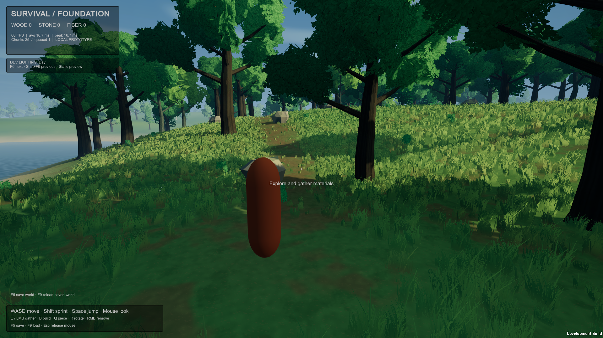
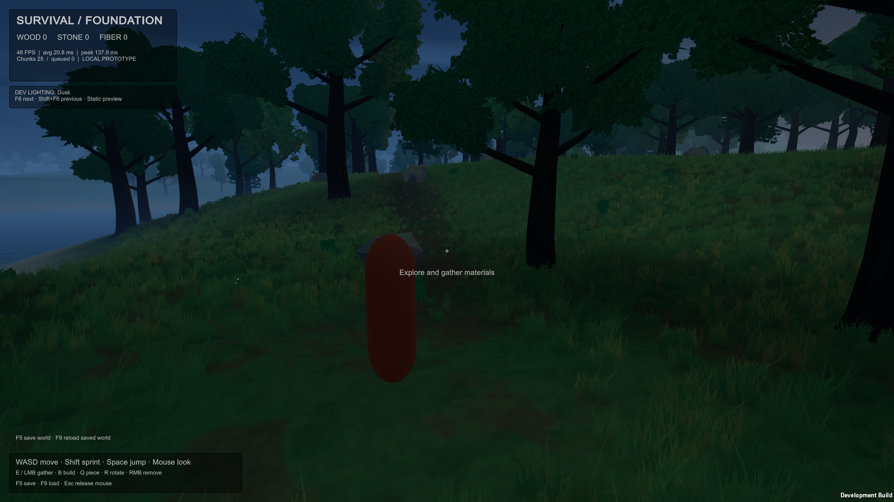

LOCAL DEVELOPMENT PLAY / STATIC PRESETS
Compare lighting while you play.
In the rebuilt Development player or Editor, press F6 for the next preset and Shift+F6 for the previous one. The sequence wraps through Day, Dawn, Golden hour, Overcast and Dusk. The top-left label shows the current choice.
This is a local art-review aid, not a running day/night cycle or a player brightness setting. It is disabled in network and automated study sessions, and absent from the final Release build. The lighting recipes and cloud-shadow strength are unchanged.
Day / lighting control label

Dusk / same control interface
